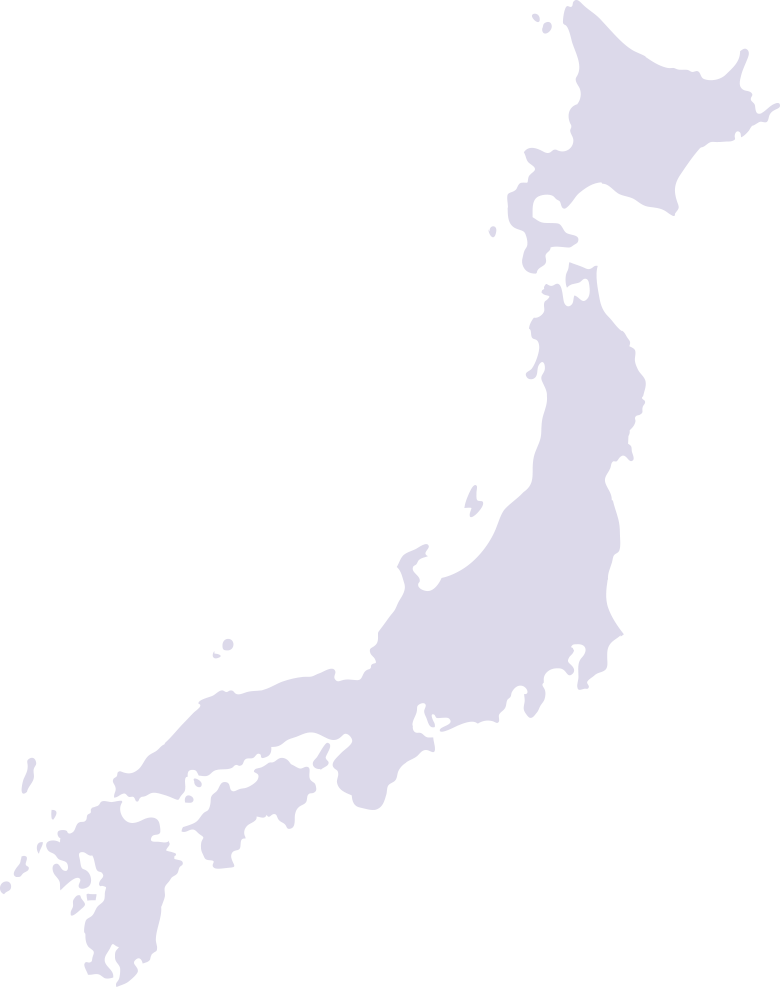

About Us
 We are a main online travel organization in France giving a ‘best as far as class can tell with the objective to be ‘ Explore Japan’. Through our site, www. .com, our versatile applications and our other related stages, recreation and business voyagers can investigate, explore, analyze costs and book an extensive variety of administrations taking into account their movement needs.Since our origin in 2000, in excess of 1 million clients have utilized at least one of our exhaustive travel-related administrations, which incorporate local and global air ticketing, lodging appointments, homestays, occasion bundles, transport ticketing, rail ticketing, exercises and subordinate administrations.
A solid and “believed” travel brand of France , our qualities incorporate a vast and faithful client base, a multi-channel stage for relaxation and business explorers, a powerful portable eco-framework for a range of voyagers and providers, a solid innovation stage intended to convey an abnormal state of adaptability and advancement and a prepared senior supervisory crew including industry officials with profound roots in the movement business in France and abroad.